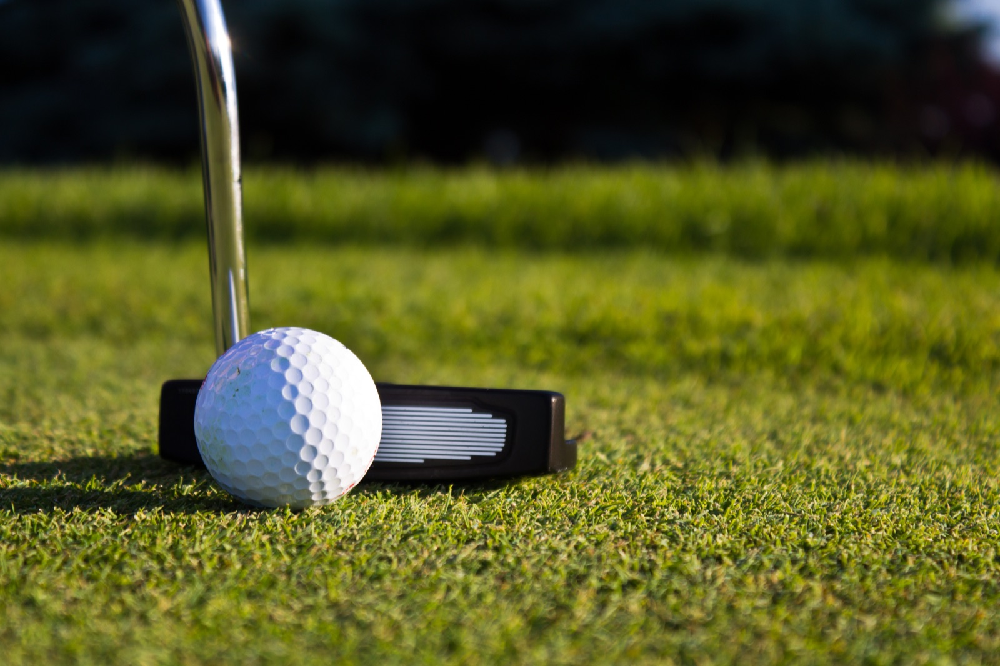
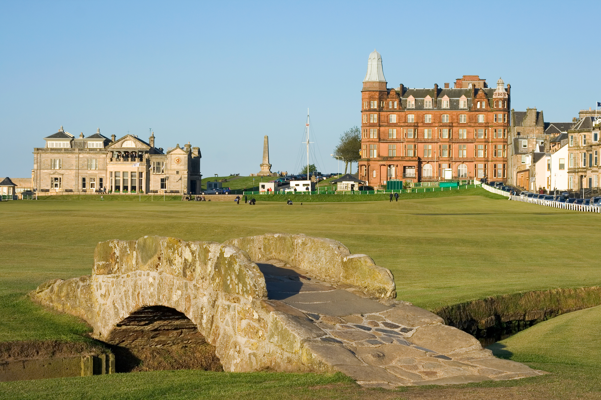

Innovation•Engineering•Performance
Measurement and Analysis for Real Sporting Gains
For coaches and athletes who want facts, not opinions.
Innovation•Engineering•Performance
For coaches and athletes who want facts, not opinions.
We develop performance systems built from precision instruments that capture what is really happening. Analytical tools then turn those readings into something a coach or athlete can act on.
That analysis shapes the training. Instead of a general programme, practice is built around what the data shows about the individual.
We start with real problems and the people who live with them, then engineer until the improvement can be proven rather than assumed.
We engineer precision instruments that capture what is really happening, accurately and repeatably.
Those readings are turned into a clear picture of where the biggest gains are, and what they are worth.
Practice is then built around the specific weakness, and the same measurements track the progress.
Our first project is under way. Others are in the pipeline, and we will add them here as they reach the same stage.

Measure your performance, train what the numbers expose, and see the difference on your scorecard.
Full details when the trials are complete.

We work from St Andrews, a location known worldwide for its golf. It is home to the Old Course and nine others, with world-class practice facilities. Players travel here from all over the world to walk its hallowed turf.
Beyond golf, its sporting facilities run wider still. Venues across a range of sports bring professional squads here for pre-season training and elite athletes for year-round preparation.
This magnificent location puts us among people who deal in performance every day. They range from coaches and sports scientists to professional and elite amateur golfers, and athletes competing in other sports.
It also gives us somewhere to work. Practice areas and training venues let us test our systems in the conditions they will actually be used in, and against the standards these people expect.
We are always glad to hear from coaches, athletes, sports scientists, clubs and manufacturers. Whether you have a performance problem worth measuring, or you would simply like to know more about what we are building, get in touch.
Andy Hill: andy@standrewsdynamics.com
Bill McKinley: bill@standrewsdynamics.com